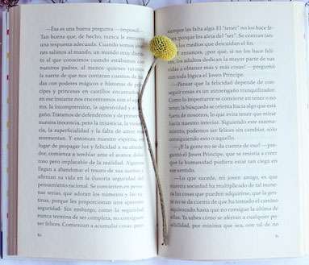

Mundo Extraño. Gran Libro de la película.
Un mundo mágico de historias llenas de fantasía e icónicos protagonistas: desde el ratoncito más famoso del mundo, pasando por los increíbles superhéroes de Marvel, hasta valientes princesas y un sinfín de personajes de películas y series únicas.
Un universo de libros para dejar volar la imaginación, grandes colecciones con las que aprender, divertirse y vivir emocionantes aventuras en las que todo es posible. Entretenimiento asegurado para todas las edades con los clásicos de siempre y las últimas novedades: con Disney todos los sueños se hacen realidad.
Los Clade son una familia de exploradores que vive en Avalonia. Cuando una misteriosa plaga empieza a infectar los cultivos de Pando, la planta de la que se extrae la energía que mueve su mundo, tres generaciones de Clades se lanzan a una aventura que los cambiará para siempre. Para descubrir la causa de la plaga que está amenazando su hogar, se adentrarán en las profundidades de un mundo subterráneo lleno de peligros, pero también de aliados.